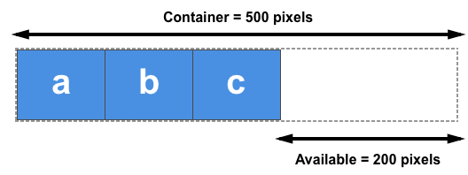

The main axis
The main axis is defined by flex-direction, which has four possible values:
rowrow-reversecolumncolumn-reverse
Should you choose row or row-reverse, your main axis will run along the row in the inline-direction

Choose column or column-reverse and your main axis will run from the top of the page to the bottom - in the block direction

The cross axis
The cross axis runs perpendicular to the main axis, therefore if your flex-direction (main axis) is set to row or row-reverse the cross axis runs down the columns.

If your main axis is column or column-reverse then the cross axis runs along the rows.

Understanding which axis is which is important when we start to look at aligning and justifying flex items; flexbox features properties that align and justify content along one axis or the other.
Another vital area of understanding is how flexbox makes no assumption about the writing mode of the document. In the past, CSS was heavily weighted towards horizontal and left-to-right writing modes. Modern layout methods encompass the range of writing modes and so we no longer assume that a line of text will start at the top left of a document and run towards the right hand side, with new lines appearing one under the other.
You can read more about the relationship between flexbox and the Writing Modes specification in a later article, however the following description should help explain why we do not talk about left and right and top and bottom when we describe the direction that our flex items flow in.
If the flex-direction is row and I am working in English, then the start edge of the main axis will be on the left, the end edge on the right.

If I were to work in Arabic, then the start edge of my main axis would be on the right and the end edge on the left.

In both cases the start edge of the cross axis is at the top of the flex container and the end edge at the bottom, as both languages have a horizontal writing mode.
After a while, thinking about start and end rather than left and right becomes natural, and will be useful to you when dealing with other layout methods such as CSS Grid Layout which follow the same patterns.
An area of a document laid out using flexbox is called a flex container. To create a flex container, we set the value of the area's container's display property to flex or inline-flex. As soon as we do this the direct children of that container become flex items. As with all properties in CSS, some initial values are defined, so when creating a flex container all of the contained flex items will behave in the following way.
- Items display in a row (the
flex-direction property's default is row).
- The items start from the start edge of the main axis.
- The items do not stretch on the main dimension, but can shrink.
- The items will stretch to fill the size of the cross axis.
- The
flex-basis property is set to auto.
- The
flex-wrap property is set to nowrap.
The result of this is that your items will all line up in a row, using the size of the content as their size in the main axis. If there are more items than can fit in the container, they will not wrap but will instead overflow. If some items are taller than others, all items will stretch along the cross axis to fill its full size.
You can see in the live example below how this looks. Try editing the items or adding additional items in order to test the initial behavior of flexbox.
Changing flex-direction
Adding the flex-direction property to the flex container allows us to change the direction in which our flex items display. Setting flex-direction: row-reverse will keep the items displaying along the row, however the start and end lines are switched.
If we change flex-direction to column the main axis switches and our items now display in a column. Set column-reverse and the start and end lines are again switched.
The live example below has flex-direction set to row-reverse. Try the other values — row, column and column-reverse — to see what happens to the content.
Multi-line flex containers with flex-wrap
While flexbox is a one dimensional model, it is possible to cause our flex items to wrap onto multiple lines. In doing so, you should consider each line as a new flex container. Any space distribution will happen across that line, without reference to the lines either side.
To cause wrapping behaviour add the property flex-wrap with a value of wrap. Now, should your items be too large to all display in one line, they will wrap onto another line. The live sample below contains items that have been given a width, the total width of the items being too wide for the flex container. As flex-wrap is set to wrap, the items wrap. Set it to nowrap, which is also the initial value, and they will instead shrink to fit the container because they are using initial flexbox values that allows items to shrink. Using nowrap would cause an overflow if the items were not able to shrink, or could not shrink small enough to fit.
Find out more about wrapping flex items in the guide Mastering Wrapping of Flex Items.
You can combine the two properties flex-direction and flex-wrap into the flex-flow shorthand. The first value specified is flex-direction and the second value is flex-wrap.
In the live example below try changing the first value to one of the allowable values for flex-direction - row, row-reverse, column or column-reverse, and also change the second to wrap and nowrap.
Properties applied to flex items
To have more control over flex items we can target them directly. We do this by way of three properties:
We will take a brief look at these properties in this overview, and you can gain a fuller understanding in the guide Controlling Ratios of Flex Items on the Main Axis.
Before we can make sense of these properties we need to consider the concept of available space. What we are doing when we change the value of these flex properties is to change the way that available space is distributed amongst our items. This concept of available space is also important when we come to look at aligning items.
If we have three 100 pixel-wide items in a container which is 500 pixels wide, then the space we need to lay out our items is 300 pixels. This leaves 200 pixels of available space. If we don’t change the initial values then flexbox will put that space after the last item.

If we instead would like the items to grow and fill the space, then we need to have a method of distributing the leftover space between the items. This is what the flex properties that we apply to the items themselves, will do.
The flex-basis property
The flex-basis is what defines the size of that item in terms of the space it leaves as available space. The initial value of this property is auto — in this case the browser looks to see if the items have a size. In the example above, all of the items have a width of 100 pixels and so this is used as the flex-basis.
If the items don’t have a size then the content's size is used as the flex-basis. This is why when we just declare display: flex on the parent to create flex items, the items all move into a row and take only as much space as they need to display their contents.
The flex-grow property
With the flex-grow property set to a positive integer, flex items can grow along the main axis from their flex-basis. This will cause the item to stretch and take up any available space on that axis, or a proportion of the available space if other items are allowed to grow too.
The flex-grow property can be used to distribute space in proportion. If we give our first item a flex-grow value of 2 and the other items a value of 1, 2 parts will be given to the first item (100px out of 200px in the case of the example above), 1 part each the other two (50px each out of the 200px total).
The flex-shrink property
Where the flex-grow property deals with adding space in the main axis, the flex-shrink property controls how it is taken away. If we do not have enough space in the container to lay out our items and flex-shrink is set to a positive integer the item can become smaller than the flex-basis. As with flex-grow different values can be assigned in order to cause one item to shrink faster than others — an item with a higher value set for flex-shrink will shrink faster than its siblings that have lower values.
The minimum size of the item will be taken into account while working out the actual amount of shrinkage that will happen, which means that flex-shrink has the potential to appear less consistent than flex-grow in behavior. We’ll therefore take a more detailed look at how this algorithm works in the article Controlling Ratios of items along the main axis.
Note that these values for flex-grow and flex-shrink are proportions. Typically if we had all of our items set to flex: 1 1 200px and then wanted one item to grow at twice the rate, we would set that item to flex: 2 1 200px. However you could use flex: 10 1 200px and flex: 20 1 200px if you wanted.
Shorthand values for the flex properties
You will very rarely see the flex-grow, flex-shrink, and flex-basis properties used individually; instead they are combined into the flex shorthand. The flex shorthand allows you to set the three values in this order — flex-grow, flex-shrink, flex-basis.
The live example below allows you to test out the different values of the flex shorthand; remember that the first value is flex-grow. Giving this a positive value means the item can grow. The second is flex-shrink — with a positive value the items can shrink, but only if their total values overflow the main axis. The final value is flex-basis; this is the value the items are using as their base value to grow and shrink from.
There are also some predefined shorthand values which cover most of the use cases. You will often see these used in tutorials, and in many cases these are all you will need to use. The predefined values are as follows:
flex: initialflex: autoflex: noneflex: <positive-number>
Setting flex: initial resets the item to the initial values of Flexbox. This is the same as flex: 0 1 auto. In this case the value of flex-grow is 0, so items will not grow larger than their flex-basis size. The value of flex-shrink is 1, so items can shrink if they need to rather than overflowing. The value of flex-basis is auto. Items will either use any size set on the item in the main dimension, or they will get their size from the content size.
Using flex: auto is the same as using flex: 1 1 auto; everything is as with flex:initial but in this case the items can grow and fill the container as well as shrink if required.
Using flex: none will create fully inflexible flex items. It is as if you wrote flex: 0 0 auto. The items cannot grow or shrink but will be laid out using flexbox with a flex-basis of auto.
The shorthand you often see in tutorials is flex: 1 or flex: 2 and so on. This is as if you used flex: 1 1 0. The items can grow and shrink from a flex-basis of 0.
Try these shorthand values in the live example below.
Alignment, justification and distribution of free space between items
A key feature of flexbox is the ability to align and justify items on the main- and cross-axes, and to distribute space between flex items.
align-items
The align-items property will align the items on the cross axis.
The initial value for this property is stretch and this is why flex items stretch to the height of the tallest one by default. They are in fact stretching to fill the flex container — the tallest item is defining the height of that.
You could instead set align-items to flex-start in order to make the items line up at the start of the flex container, flex-end to align them to the end, or center to align them in the centre. Try this in the live example — I have given the flex container a height in order that you can see how the items can be moved around inside the container. See what happens if you set the value of align-items to:
stretchflex-startflex-endcenter
justify-content
The justify-content property is used to align the items on the main axis, the direction in which flex-direction has set the flow. The initial value is flex-start which will line the items up at the start edge of the container, but you could also set the value to flex-end to line them up at the end, or center to line them up in the centre.
You can also use the value space-between to take all the spare space after the items have been laid out, and share it out evenly between the items so there will be an equal amount of space between each item. To cause an equal amount of space on the right and left of each item use the value space-around. With space-around, items have a half-size space on either end. Or, to cause items to have equal space around them use the value space-evenly. With space-evenly, items have a full-size space on either end.
Try the following values of justify-content in the live example:
flex-startflex-endcenterspace-aroundspace-betweenspace-evenly
In the article Aligning Items in a Flex Container we will explore these properties in more depth, in order to have a better understanding of how they work. These simple examples however will be useful in the majority of use cases.